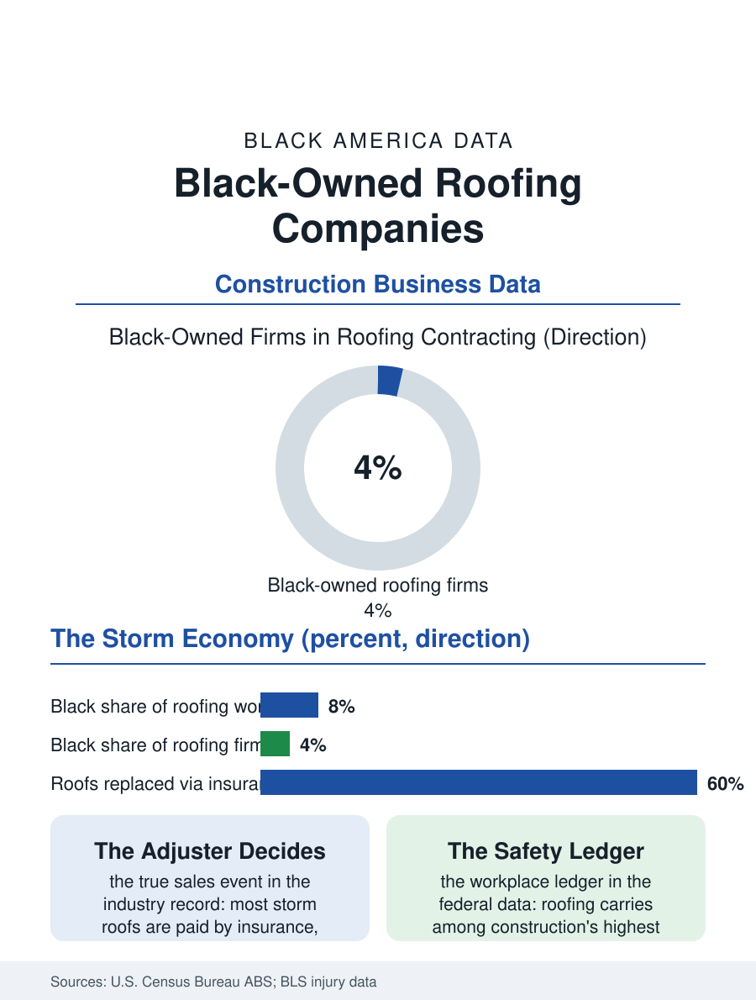

Black Business
After the Storm: Black-Owned Roofing Companies
Roofing is a storm-driven, insurance-mediated industry of trust, and Black firms hold a small share of it far from the neighborhoods where they win it. The roofing file.

A roof is the most expensive single system most families own, replaced on a twenty-year clock, usually under duress after a storm, and almost always by a company the homeowner found in a hurry. Roofing contracting is consequently a large, fragmented, reputation-driven industry, and Black-owned roofing companies hold a small share of its employer firms in the Census Bureau's business counts, concentrated in the storm-belt South and the older housing markets of the Midwest. This article reads the roofing file.
Storm Work and the Doorbell Economy
The industry's demand splits between planned replacement, the aging shingle roof at the end of its service life, and storm response, the hail and hurricane events that can reorder a regional market in a single weekend. Storm work built the modern industry's giants, companies that follow the weather with sales forces and insurance-claims departments, and it is the segment where the business data show the sharpest sorting: the storm chasers arrive with capital, manufacturer certifications, and insurer relationships, while local Black firms, rooted in the neighborhoods taking the damage, compete on trust and response time against companies that will leave when the claims run out. The insurance nexus governs everything. Most storm roofs are paid by homeowners' insurance, which makes the adjuster's approval the industry's true sales event and documentation skill, photographing, measuring, and arguing the claim, a core competence the successful firms institutionalize. For the homeowner base of this atlas, the stakes are doubled: Black homeowners face the insurance file's documented disparities in claims experiences, and the Black roofer who knows the claims process from both sides is a community institution of a specific and valuable kind, part contractor, part advocate, at the exact moment a family negotiates its largest asset's largest repair.
Crews, Capital, and the Ladder of Materials
The production economics run on crews, and roofing crews in most of the country are organized through subcontractor networks with their own demographics, predominantly Latino in the southern and western markets, a labor system the Black-owned firm must hire into, manage, and increasingly compete for as crew labor tightens. The firm's own ladder is capital: trucks, dump trailers, safety systems, and the material float, since suppliers extend the credit that lets a firm start a roof before the insurer's check arrives, importing the trade credit pattern from the trades files. Manufacturer certification programs, the shingle makers' credential tiers, serve as the industry's quality signal and its marketing subsidy, co-op advertising and listing placement flowing to certified firms, and Black firms' certification rates trail the industry in the program data for the usual compounding reasons: tenure, volume thresholds, and the training geography. The safety file is the industry's heaviest: roofing records among the highest fatality and injury rates in construction in the federal data, borne overwhelmingly by the crews rather than the owners, and the firms that institutionalize safety, harnesses, training, supervision, distinguish themselves in the insurance market, since a roofing firm's workers' compensation rate can decide its survival independent of its sales.
Aging Stock, Rising Weather
The forward file is a convergence of certainties. America's housing stock is old and getting older in the median survey data, the replacement queue lengthens every year, and the storm maps expand the industry's event geography into regions, the Southeast's inland counties, the Midwest's hail corridor, where Black homeownership is concentrated and Black roofing firms are rooted. Solar adds the second trade to the same roof: the firms that pair roofing with solar installation capture the roof's full remaining value in one mobilization, and the pairing is one of the industry's visible growth strategies, though it requires exactly the capital and certification stack that this file documents as unevenly held. Succession presses as everywhere in the trades: founder-led firms face the platform buyers, and the roofing rollups have been among the most aggressive in construction, buying local brands and keeping their names, a model that preserves the sign while transferring the equity out of the community that built it. The roofing file closes on the truck in the driveway after the storm, the moment the industry's whole economy compresses into a homeowner's decision about trust. Black firms win that moment in their home neighborhoods at rates their market share does not predict, because the roof over a family's head is the most trust-dense purchase in the household economy. The data ask only how far that trust is allowed to travel, into the suburbs, the commercial work, and the manufacturer programs, before the weather, which is expanding the industry's map toward Black America, finds the firms already there waiting.
More in Black Business
Black-Owned Businesses: Counts, Receipts, and the Representation Gap
About 161,000 Black-owned employer firms and three million solo ventures: how the Census Bureau counts Black business ownership, where firms concentrate, and the gap between population share and business share.
Black Median Net Worth: The Wealth Gap in Federal Reserve Data
The Federal Reserve puts Black median family net worth at $44,900, against $285,000 for White families — about 16 cents on the dollar. The widest gap in economic data.
Black Buying Power: The $1.8 Trillion Consumer Economy
Black buying power is estimated at about $1.8 trillion — larger than the economy of most nations. What the figure measures, who produces it, and what it buys.
Source: U.S. Census Bureau, Annual Business Survey (NAICS 23816); Bureau of Labor Statistics construction injury data; roofing industry reports.